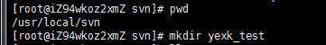
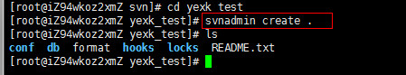
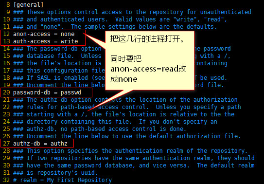
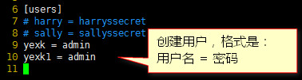
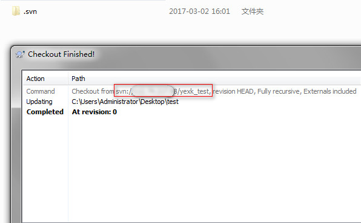

[TOC]
# 安装后的SVN配置
我们一般在linux都安装了svn，然后通过svn来管理代码。安装教程就赘述了，基本就是解压-编译-编译-安装。这里我讲svn安装完后的配置仓库方法。
# 创建目录
仓库目录创建在哪里都可以。只要你能找到，就ok。 例：/usr/local/svn/yexk_test
命令：mkdir yexk_test 
# 创建仓库
进入yexk_test目录创建仓库。
命令：svnadmin create .（注意后面有点，指到当前目录）

查看目录，可以发现已经多了，conf、db、hooks等目录或文件。
# 配置仓库
配置文件都在conf目录下。分别是svnserve.conf、passwd 、authz。
- 打开读写权限控制
编辑
svnserve.conf文件。安装图修改，修改后保存退出。 
注意：anon-access=read 必须打开，并且改成none，不然任何人都可以下载代码了。同时要注意配置前面不要有空格。 password-db 和 authz-db 的这两个文件是可以重新定义的。如果你有需求改成多仓库统一配置就需要改目录位置。
2）创建用户密码
编辑passwd文件。添加用户。保存退出。

创建格式是：用户名 = 密码
3）分配权限
编辑authz文件。

根据权限或者权限组来分配对应的读写权限。
这里配置就已经完成了。最后启动服务就行了。
# 启动svn
命令：svnserve -d -r /usr/local/svn/(-d:服务在后台进行,-r:把后面的目录当成根目录运行)
接下来就可以访问请求了。
svn checkout svn://IP地址/仓库目录/
输入账号密码就可以。

启动后我先说题外话，一般用户配置的仓库都不会是单一个的。所以这里就有多仓库的问题了。我该怎么启动svn。
比如我这里的仓库目录是/usr/local/svn/yexk_test，一般不推荐把服务根目录挂在仓库同级下。
也就是不推荐svnserve -d -r /usr/local/svn/yexk_test/这样启动服务。
如果有需求需要添加第二个仓库，那么这个时候就有点麻烦了。
# 自动同步（非必要）
此步骤仅仅为了线上环境可以和web文件同步。 自动同步文件是在hooks目录下的一个post-commit文件。
1） 进入到仓库目录下的hooks目录。
2） 复制一份post-commit.tmpl文件，并且重名为post-commit。
命令：cp post-commit.tmpl post-commit
3） 分配755权限。
命令：chmod 755 post-commit
4） 添加一段代码，用于自动更新代码到web仓库。
EPOS="$1" REV="$2" export LANG=en_US.UTF-8 WEB_PATH=/www/yexk_test/ # web项目地址 SVN_USER=yexk # svn用户名 SVN_PASS=admin # svn密码 LOG_PATH=/tmp/svn_yexk.log # 日志文件。可以忽略 echo `date "+%Y-%m-%d %H:%M:%S"` >> $LOG_PATH # 日志文件。可以忽略 echo `whoami`,$REPOS,$REV >> $LOG_PATH # 日志文件。可以忽略 svn update $WEB_PATH --username $SVN_USER --password $SVN_PASS --no-auth-cache >> $LOG_PATH # 如果忽略了日志文件最后的输出就免了。